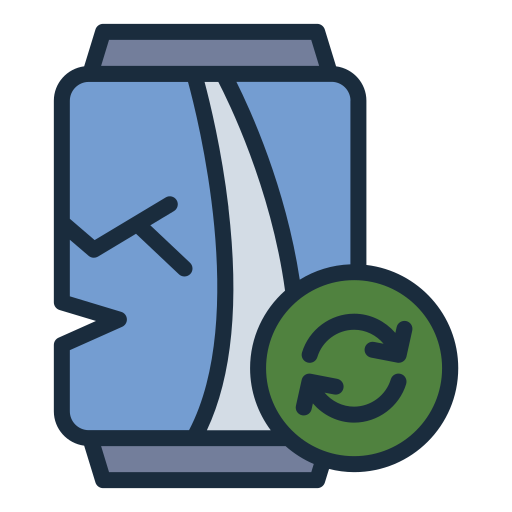

Guia para o descarte de Metal.
-

O descarte incorreto de metais contribui para a poluição do solo e da água. Latas de aço e alumínio, por exemplo, demoram centenas de anos para se decompor na natureza. Além disso, a produção de alumínio a partir de matérias-primas virgens, como a bauxita, consome uma grande quantidade de energia elétrica e gera resíduos tóxicos.
Por que reciclar metal?
Metais são 100% recicláveis e sua reciclagem economiza recursos naturais e energia. Latas recicladas podem retornar às prateleiras em poucos dias.
O que pode ser reciclado:
- Latas de alumínio (refrigerante, cerveja)
- Latas de aço (enlatados)
- Fios de cobre
- Tampas metálicas
O que NÃO pode ser reciclado:
- Objetos enferrujados
- Latões contaminados (óleo, tinta)
- Pregos, parafusos oxidados